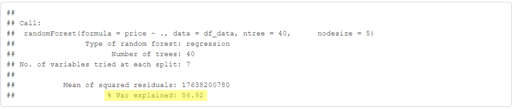
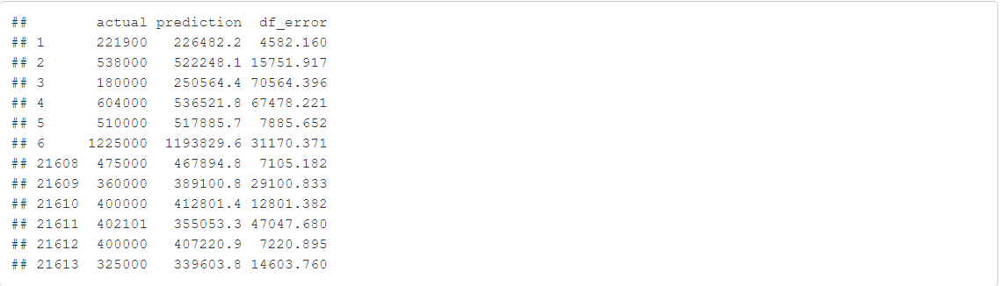

Vetores
Um vetor em R é uma estrutura básica dentro da linguagem, que permite armazenar uma quantidade numérica ou string (letras ou caracteres), em um único objeto. O vetor possui apenas 01 única dimensão.

Vamos utilizar um conjunto de dados, conhecido, para conseguirmos demonstrar
na prática o que seria uma regreção linear.
Iremos utilizar a função read.csv(), para carregar nosso conjunto de dados.
Abaixo demonstraremos como carregar um conjunto de dados,
lembrando que é preciso determinar alguns parâmetros, file ou path, caminho do diretório do arquivo
em seu computador, header indica se o conjunto de dados tem ou não o nome das variáveis e como é um arquivo
csv temos que demonstrar qual é o separador, nesse dataset é a vírgula.
Abaixo temos 02 exemplo, o primeiro,
baixar o arquivo, e salva em seu computador. Ou Caso preferir pode
utilizar a segunda opção que pega o arquivo direto do repositório do GitHub.
# Primeira Opção
df <- read.csv(file = 'C:/Users/Downloads/dados/kc_house_data.csv', header = TRUE, sep = ",")
dfOu
# Segunda Opção
df <- read.csv(file = 'https://github.com/rodolffoterra/rodolffoterra.github.io/blob/main/dados/kc_house_data.csv', header = TRUE, sep = ",")
dfO nosso conjunto de dados é composto por 21 variáveis (tamanho da casa, quantidade de quartos, banheiros, entre outros) e o valor vendido da casa entre o período de Maio de 2014 a Maio de 2015, variável dependendo, ou seja, a variável que queremos que o nosso modelo nos apresente.
library(ggplot2)
library(corrplot)
library(tidyverse)Construindo o gráfico de correlação entre o valor da casa e a áre construida.
ggplot(df, aes(x= sqft_living, y =price/100000)) +
geom_point(color = 'lightblue') +
theme_classic() +
labs(title = "Correlação entre o Preço X Área de casa",
x = 'Área (sqfl)',
y = 'Preço')Conforme podemos observar no eixo x, Área (sqfl) aumenta, o preço também tende a aumenta. Quanto usamos apenas uma única variável (Área da casa) para chegarmos no valor da variável dependente, ou seja o preço da casa, podemos criar uma regressão Linear Simples.
Toda Regressão linear simples a variável X, ou seja uma única variável, tentará explicar a variação de y.
Então ao voltarmos para o nosso exemplo, é possível saber o valor de "a" (chamado intercepto) e também o valor de "b"" (que representa a inclinação da reta).
lm(price/100000 ~ sqft_living, data = df)| ## ## Call: ## lm(formula = price/1e+05 ~ sqft_living, data = df) ## ## Coeficients: ## (Intercept) sqft_living ## -0.436034 0.002806 |
conforme demonstrado em nosso conjunto de dados podemos afirmar que:
f(y) = ax + b
Valor_da_casa = -0.002806 x sqft_living - 0.436034 Lembramos que o peço da casa está divido por 105, como exemplo uma casa que tenha 5000 sqft custará
um valor de R$ 135.996,60. Vejamos o nosso código f(y) = 0.002806 * 5000 - 0.46034.
Podemos demonstrar a regressão linear simples no gráfico para ficar mais fácil a compreensão.
ggplot(df, aes(x= sqft_living, y =price/100000)) +
geom_point(color = 'lightblue') +
geom_smooth(method = lm, size=0.5, se = FALSE,color = "red") +
theme_classic() +
labs(title = "Regressão linear Simples entre Preço e Área da Casa",
x = "Área (sqfl)",
y = "Preço")Conforme podemos observar a equação acima, e o gráfico abaixo, esta equação representa exatamente a linha reta demonstrada em vermelho no gráfico abaixo.
Ao observar este pequeno exemplo, todos mundo sabe que o valor de uma casa não está somente relacionado a sua área de construção. Existe outras variáveis, que agregam valor no preço da casa. É o que passaremos a estudar nesse exata momento. Porém antes de acrescentarmos mais variáveis em nosso modelo gostaria de apresentar um outro gráfico, de correção entre as variávies.
Nesse gráfico temos diversas variáveis tais como:
Todas as variáveis acima, exceto a Construction_Time estão representados com um circulo
azul no gráfico. O motivo de estar com a coloração azul, significa que todas estas variáveis possui uma correlação
positiva com o valor da casa, ou seja, quanto maior a área da casa, maios a quantidade de banheiros, maiores a quantidade de quartas, etc,
correspende respectivamente um tendencia de aomento no valor da casa.
Porém ai se falar em quantidade de anos que esta casa possui, quanto mais velha for a casa esperamos que tal variável,
denter a reduzir o valor de venda da casa.
Para conseguirmos demonstrar uma correlação negativa, podemos pegar duas variáveis, Quantidade de Banheiros em relação a quantidade de anos que a casa foi construida.
ggplot(df_data, aes(x= Construction_Time, y =bathrooms)) +
geom_point(color = 'lightblue') +
theme_classic() +
geom_smooth(method = lm, size=0.5, se = FALSE,color = "red") +
labs(title = "Correlação entre o Qunatidade de Banheiros X Quantidade de Anos que a casa foi construida",
x = 'Qta de Anos',
y = 'Quantidade de Banheiros')Esse gráfico nos mostra que as casa mais recentes possui uma tendência de ter mais banheiro comparado com as casa mais velhas.
Acima demostramos o que seria uma regressão linear simples, a variável X, ou seja uma única variável, tentará explicar a variação de y. A regressão linear múltipla, mais do que uma variável tenta explicar a variável y. Ou seja, em nosso modelo para conseguirmos chegar mais próximo ao valor real da casa, não basta apenas, basiarmos, na metragem da área, mas também na quantidade de quartos, quantidade de banheiros, tempo da casa, quantidade de andares, entre outras.
Iremos agora testar o modelo, ou seja, o quanto é a variável explicativo de uma regressão linear simples apenas da área da casa em relação ao valor da casa?
library(randomForest)
model1 <- randomForest(price ~ sqft_living15,
data = df_data,
ntree = 40,
nodesize = 5)
print(model1)Ao criarmos uma regressão linear simples, utilizando apenas a área da casa para conseguirmos prever o valor da casa, o código acima está mostrando que somente a área consegue explicar 33,14% o valor da casa. Nesse artigo, não entraremos mais em detalhes no tema randomForest, falaremos um artigo somente desta ferrameta. O que é importante para este momento é saber que temos que usar mais variáveis para conseguirmos prever com o menor erro possível o valor da casa. Então utilimaremos 04 variáveis, e veremos a sua variável explicativa.
model2 <- randomForest(price ~ sqft_living15 + yr_built + grade + bathrooms,
data = df_data,
ntree = 40,
nodesize = 5)
print(model2)Ao utilizar a área construida, ano de contsrução, classificação geral e quantidade de banheiros, a variável explicativa do modelo dobrou, para 66,42%.
Abaixo teremos a equação de uma regressão linear múltipla
lm(price/100000 ~ sqft_living15 + yr_built + grade + bathrooms, data = df_data) A Equação fica dessa seguinte forma:
f(valor_casa) = 1.2182280(bathrooms) + 1.6780753(grade) -0.0467126(yr_built) + 0.0009584(sqft_living15) + 80.1427967
Para finalizar construiremos um modelo com todas as variáveis em nosso conjunto de dados,
para demonstrarmos que queremos todas as variáveis, utilizaremos no modelo a variável
dependente a esquerda e um price ~ . a direita, o acento serve para seprarar as
variáveis dependente das idependente.
model3 <- randomForest(price ~ .,
data = df_data,
ntree = 40,
nodesize = 5)
print(model3)
Podemos observar que o nosso terceiro modelo, usando todas as variáveis de nosso conjunto de dados, foi o modelo que mais conseguiu explicar a variação do preço das casa. O tema desse artigo é regressão linear, e teve como objetivo explicar a diferença entre a regressão linear simples e a regressão linear múltipla. Porém quero deixar aqui bem claro que nem sempre o melhor modelo é aquele que possui todas as variávels. Abaixo mostrarei uma técnica que trabalhamos em ciência de dados que se chama Feature Selection, irei entrar em detalhes em um outro artigo,
A seleção de Atributos, ou o Feature Selection tem como objetivo a simpleficação do modelo, para facilitar sua interpretação, dedução do tempo de treinamento do modelo e melhoria da generalização do modelo, evitando overfitting. Utilizaremos a tecnicas de feaure selection para automitizar a seleção de variáveis com maior potencial para variáveis preditoras. Sendo uma espécie de filtro, que remove do seu dataset as variáveis que não serão úteis para a criação do modelo preditivo. Tem como principal objetivo a criação de um modelo preditivo com a maior precisão possível e que seja generalizável. As técnicas de Feaure Selection basicamente calculam o nível de signifiância de cada variável e eliminam aquelas com significância mais baixa.
Modelo <- randomForest(price ~ .,
- id
- Hora
- zipcode
- lat
- long,
data = df_data,
ntree = 100,
nodesize = 10,
importance = TRUE)
# Demonstrando o Modelo
varImpPlot(Modelo)Acima o gráfico mostra as variveias que mais são significativas para a criação do modelo por dois métodos diferente. As variáveis que possui seu ponto mais a direita são as que mais explica o valor da casa. Como podemos observar pelo método IncNodePurity a variável grade e a variável sqft_living são as mais importantes. Já com a metodologia %IncMSE, existe 06 variáveis com maior importância para a explicação do peço da casa, que são: sqft_lot15, yr_built, sqft_living15,sqft_lot,Construction_Time e grade.
Apenas para completar o entendimento do artigo, utilizaremos o modelo3 ,
o modelo que utilizamos todas as variáveis, para demonstrar rapidamente o valor real do preço
da casa com o valor preditivo, criado pelo modelo.
Como ciêntista de dados, é preciso ainda
realizarmos outras etapas que não foram mencionadas neste artigo, que serão explicada com maiores detalhes.
scores <- data.frame(actual = df_data$price,
prediction = predict(model4, newdata = df_data))
inFrame <- scores[, c("actual", "prediction")]
refFrame <- df_data
df_error <- rbind(head(scores), tail(scores))
df_error <- df_error %>%
mutate(df_error = ifelse(df_error$actual > df_error$prediction,
(df_error$actual - df_error$prediction) ,
(df_error$prediction - df_error$actual)))
rbind(head(df_error), tail(df_error))
round(sum(df_error$df_error)/nrow(df_error), digits = 2)| ## [1] 26276.04 |
Podemos ver o valor real em nosso conjunto de dado, na primeira coluna, e na segunda coluna o valor estimado em nosso modelo, e a variação do valor, na terceira coluna, ou seja o erro. Em média, temos um variação de erro do valor da casa em modelo de R$ 26.276,04. Ou seja nosso modelo modelo poderá errar esse valor tanto para cima, quando para baixo.
Todas estas perguntas serão respondida, conforme os artigos forem progredindo. Existe estas e muitas outras perguntas a serem respondidas. Mas uma coisa precisamos ter certeza, quanto mais simples for o seu modelo, melhor será.
Um vetor em R é uma estrutura básica dentro da linguagem, que permite armazenar uma quantidade numérica ou string (letras ou caracteres), em um único objeto. O vetor possui apenas 01 única dimensão.

Matrizes é caracterizado como uma coleção de vetores, sendo todos do mesmo tipo (numérico ou caracteres) armazenados entre linhas e colunas.
Um data frame é semelhante a uma matriz mas as suas colunas têm nomes e podem conter dados de tipo diferente. Um data frame pode er visto como uma tabela de uma base de dados, em que cada linha corresponde a um registo (linha) da tabela.
Em estatística, a análise exploratória de dados é uma abordagem à análise de conjuntos de dados de modo a resumir suas características principais, frequentemente com métodos visuais.
Em estatística ou econometria, regressão linear é uma equação para se estimar a condicional de uma variável y, dado os valores de algumas outras variáveis x.

02 / 04 / 2021
 O Kaggle é uma plataforma gratuita que tem como objetivo inicial promover desafios entre profissionais da área de
análise, porém atualmente se tornou uma grande comunidade de Data Sciente. Para demonstrar o trabalho de modelagem de
dados, foi coletado um dataset fornecido no campeonato “House Sales in King Country, USA” da plataforma Kaggle.
Temos como objetivo principal deste projeto, realizar Bussiness Analyst no conjunto de dados. E como segundo objetivo
desenvolver um modelo de regressão que possa prever o valor de um imóvel com base nas variáveis apresentadas no banco de
dados.Primeiramente coletamos o dataset fornecido pelo Kaggles. Ao coletar tais informações percebemos que o conjunto de
dados é composto por 21 variáveis (tamanho da casa, quantidade de quartos, banheiros, entre outros) e o valor vendido da
casa entre o período de Maio de 2014 a Maio de 2015, variável dependendo, ou seja, a variável que queremos que o nosso
modelo nos apresente.
O Kaggle é uma plataforma gratuita que tem como objetivo inicial promover desafios entre profissionais da área de
análise, porém atualmente se tornou uma grande comunidade de Data Sciente. Para demonstrar o trabalho de modelagem de
dados, foi coletado um dataset fornecido no campeonato “House Sales in King Country, USA” da plataforma Kaggle.
Temos como objetivo principal deste projeto, realizar Bussiness Analyst no conjunto de dados. E como segundo objetivo
desenvolver um modelo de regressão que possa prever o valor de um imóvel com base nas variáveis apresentadas no banco de
dados.Primeiramente coletamos o dataset fornecido pelo Kaggles. Ao coletar tais informações percebemos que o conjunto de
dados é composto por 21 variáveis (tamanho da casa, quantidade de quartos, banheiros, entre outros) e o valor vendido da
casa entre o período de Maio de 2014 a Maio de 2015, variável dependendo, ou seja, a variável que queremos que o nosso
modelo nos apresente.